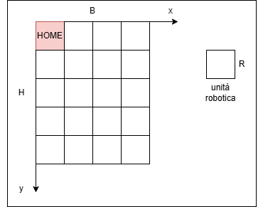

Goal Sprint0: Analisi dei Requisiti
Introduction
A Maritime Cargo shipping company (fron now on, simply company) intends to automate the operations of load of containers in the ship’s cargo hold (or simply hold). To this end, the company plans to employ a Differential Drive Robot (from now, called cargorobot).
The hold is a rectangular, flat area with an Input/Output port (IOPort). The area provides 4 slots to store the
containers and a slot named slot5.

In the picture above:
- The slots1-4 depict the hold areas reserved to store one container each,
- The slots5 depicts an area, where the cargorobot must temporarily store a container, before to place it in one of the slots1-4. During temporary storage, a ‘marker’ device labels the container with an identification barcode and signals when this marking activity is completed.
- The IOPort is a device with a pushbutton and a display. The pushbutton is pressed by the customer in order to to send a request to load a container on the cargo. The display is used to show the answer to the request and to show the current state of the hold.
-
The sensor associated to the IOPort is a device (a sonar) used to detect the presence of a container, when it
measures a distance D, such that
D < DFREE/2, during a reasonable time (e.g. 3 secs).
Requirements
The company asks us to build service named cargoservice that should work as follows.
The cargoservice is able to receive a request to load a container sent by some customer by using the pushbutton of the IOPort.
-
It sends the answer
retrylater, if the IOPort is currently occupied by a container or if the system is Out of service -
It rejects the request when the hold is already full, i.e. the
slots1-4are already occupied. - Otherwise, it considers the system as engaged, detects a free slot and returns as answer the name of such a reserved slot. While engaged, the system must blink a Led.
When the request to load is accepted, the customer must move the container in the sensor area within prefixed amount of time (e.g. 30 secs), otherwise the systems becomes disengaged. Then, the cargoservice uses the cargorobot to move the container from the IOPort to the slot5 (for marking the container) and then to the reserved slot.
The service must also show on the display on the IOPort:
- the current state of the hold
- the message ‘Service working’, when it is all is going well
-
the message ‘Out of service’ if the sonar sensor measures a distance
D > DFREEfor at least 3 secs (perhaps a failure of the sonar).
Requirement analysis
Il sistema software preso in esame è composto dalle seguenti entità:
cargorobot (DDR)
È un entità computazionale attiva che modella il comportamento del robot fisico a guida differenziale (DDR) operante all'interno della stiva ed è modellata come attore QAK. Riceve ed esegue i comandi di macro-movimentazione inviati dall'orchestratore centrale per navigare sequenzialmente tra l'IOPort, lo slot 5 e gli alloggiamenti finali (slot 1-4). Il committente ha messo a disposizione più varianti di VirtualRobot26: RobotSmart26, RobotService26, RobotObj26 (METTERE LINK!!!!). Si sceglie RobotSmart26 in quanto permette di colmare maggiormente l'abstraction gap. Questo modulo solleva il nostro software dall'onere di calcolare i comandi di basso livello (avanza, ruota, stop), poiché riceve in input le coordinate cartesiane di destinazione che calcola autonomamente il percorso ottimale sulla griglia. La responsabilità dell'orchestrazione logica della missone rimane tuttavia in capo al cargorobot.
IOPort
Rappresenta il punto di interazione fisico/logico posizionato all'ingresso della stiva, strutturato come un nodo computazionalmente indipendente che espone una Web GUI. Gestisce i flussi di input e output utente disaccoppiandoli dalla logica aziendale core.
- Il suo componente di input (pushbotton) è un elemento reattivo che cattura l'interazione del cliente (pressione del pulsante) e la traduce in una richiesta formale di carico (loadrequest) indirizzata verso il sistema
- Il suo componente di output (display) si comporta come un terminale passivo incaricato di effettuare il rendering visivo delle informazioni trasmesse dal servizio. Mostra in tempo reale lo stato di occupazione corrente dei quattro slot e i messaggi operativi critici ("Service working" o "Out of service").
Sensore / Sonar
Si tratta di un'entità software proattiva, un dispositivo fisico di telemetria posizionato strategicamente in corrispondenza dell'area di accesso dell'IOPort. Effettua un campionamento continuo dello spazio antistante, calcolando la distanza D dall'ostacolo più vicino. Questo software di basso livello trasmette i dati grezzi sottoforma di stringhe formattate come distance(DIRECTION, D). Tali letture vegono inviate al sistema per consentire la verifica dei vincoli temporali e di soglia:
- se una misurazione D < DFREE/2 persiste per un intervallo temporale ragionevole (es. almeno 3 secondi), viene validata la presenza fisica di un carico da elaborare;
- se una misurazione D > DFREE persiste per più di 3 secondi, viene notificata una condizione di potenziale guasto hardware (stato Out of service).
-
può essere il sonsore a comunicare, tramite un evento (poiché non conosce il destinatario dell'informazione), la distanza rilevata. In questo caso formalizzo il seguente attore:
System cargoservice /* * MODELLO DELL'ANALISTA */ // -----definizione dei messaggi----- Event sonar : distance(D) // -----definizione del contesto----- Context ctxcargoservice ip [host="localhost" port=8120] // -----definizione degli attori----- QActor sonar context ctxcargoservice { [# var D = 0 var Timer = 1000L #] State s0 initial { println("$name | start") color green } Goto rileva_distanza State rileva_distanza{ // rilevamento della distanza D (in metri) emit sonar : distance(D) } Transition t0 whenTimeVar Timer -> rileva_distanza } -
altrimenti, il sonar potrebbe comunicare a distanza rilevata in risposta ad una richiesta del sistema. In questo caso formalizzo il seguente attore:
System cargoservice /* * MODELLO DELL'ANALISTA */ // -----definizione dei messaggi----- Request getDistance : getDistance(D) "richiesta del sistema" Reply sonar : distance(D) for getDistance // -----definizione del contesto----- Context ctxcargoservice ip [host="localhost" port=8120] // -----definizione degli attori----- QActor sonar context ctxcargoservice { [# var D = 0 var Timer = 1000L #] State s0 initial { println("$name | start") color green } Goto rileva_distanza State rileva_distanza{ // rilevamento della distanza D (in metri) } Transition t0 whenTimeVar Timer -> rileva_distanza whenRequest getDistance -> handleRequest State handleRequest{ onMsg( getDistance : getDistance(D) ){ replyTo getDistance with sonar : distance( $D ) } } Transition t0 whenTimeVar Timer -> rileva_distanza }
Domanda al committente: il software che gestisce il sonar è già disponibile?
Dispositivo Marker (Slot 5)
Si tratta di un dispositivo di scansione e identificazione localizzato in corrispondenza dello slot 5, l'area riservata alla sosta temporanea. Si attiva non appena viene segnalata la deposizione di un container nello slot 5, avviando un'operazione automatica di etichettatura per applicare un codice a barre identificativo sul carico. Il dispositivo trattiene logicamente il flusso operativo per un tempo fisso (durata della marcatura) e, una volta completata l'operazione, genera un messaggio di notifica. Trattandosi di un'entità integrata nello stesso nodo logico di cargoservice, questo messaggio di sblocco viene trasmesso internamente per segnalare al robot che può prelevare il container marcato e procedere verso la destinazione finale.
System cargoservice
/*
* MODELLO DELL'ANALISTA
*/
// -----definizione dei messaggi-----
Dispatch storeContainer : storeContainer(C)
Dispatch markingDone : markingDone(C)
// -----definizione del contesto-----
Context ctxcargoservice ip [host="localhost" port=8120]
// -----definizione degli attori-----
QActor marker context ctxcargoservice{
State s0 initial{
println("$name | starts ") color blue
}
Transition t0
wheMsg storeContainer -> marking
State marking{
// logica di marcatura del container
forward cargorobot -m markingDone : markingDone(0)
}
Transition t0
wheMsg storeContainer -> marking
}
Stiva (Hold)
Rappresenta un componente software passivo implementato come un oggetto Java puro (POJO) che funge da mappa logica in memoria dello stato della stiva. Modella e
traccia la situazione dei quattro slot di deposito principali (slot 1-4) e dello slot 5 temporaneo. Ciascun alloggiamento viene catalogato attraverso tre stati logici ben definiti: free (disponibile),
reserved (assegnato a una richiesta accettata, ma non ancora occupato fisicamente dal container) e occupied (container depositato). L'entità incapsula la logica
algoritmica per determinare se la stiva è satura (isFull()) e individua e riserva il primo slot disponibile in ordine sequenziale non appena viene convalidata
una nuova richiesta di accesso.
HOME: nei requisiti si parla di HOME come posizione iniziale in cui il DDR si trova all'interno della stanza e posizione finale del percorso lungo il perimetro della stanza.
Tuttavia ho bisogno di trovare un modo per formalizzare questa informazione. Per poter modellare la HOME ho bisogna prima di trovare un modo per formalizzare la stanza.
Posso modellare la stanza come un rettangolo in un piano euclideo con base B e altezza H, dove entrambe le misure sono espresse in metri. Introducendo gli assi cartesiani mi viene spontaneo dire che
indicherò con una coppia di coordinate X e Y una posizione all'interno della stanza. Bisogna però tenere presente che il robot non è un punto, ma occuperà un'area che assumo quadrata di lato R.
Posso quindi misurare la stanza in unità robotiche. Come si intuisce dell'immagine presentata di seguito, risulta immediato andare a rappresentare la stanza come una griglia, dove ogni cella sarà un'unità robotica.
HOME sarà quindi un'area in grado di contenere il robot, ovvero una cella predefinta all'interno della griglia che rappresenta la stanza.

Led
Rappresenta un'entità software passiva di output associata a un attuatore luminoso fisico. La sua responsabilità è quella di fornire una segnalazione visiva immediata dello stato operativo del sistema verso l'esterno. Il suo comportamento è strettamente vincolato alle transizioni di stato del servizio centrale: deve attivare la modalità lampeggiante per indicare che il sistema si trova in uno stato di impegno lavorativo, mantenendo tale comportamento durante tutte le fasi di trasferimento dei container.
Cargoservice
Rappresenta il software centrale responsabile della logica di business e del coordinamento. Riceve le richieste dalla IOPort. Consulta lo stato della stiva per accettare (riservando uno slot) o rifiutare il carico. Gestisce i timeout di presenza container (30 secondi) e comanda il comportamento del robot e del led di segnalazione. Formalizzazione dei messaggi:
Request loadrequest : loadrequest(C) Reply retrylater : retrylater(CAUSE) for loadrequest Reply reject : reject(R) for loadrequest Reply engaged : engaged(RESERVED_SLOT) for loadrequest
STATI DEL SISTEMA CARGO SERVICE
Dall'analisi dei requisiti emergono i seguenti stati operativi del servizio:
***TABELLA***
STATO | descrizione | stato led
idle | il sistema è pronto a ricevere nuove richieste di carico | spento
engaged | richiesta valida e accettata. In attesa del container (timeout 30 secondi) | lampeggiante
disengaged | timeout scaduto senza rilevamento del carico. Ritorno a idle | spento
service working | robot in azione. movimentazione o marcatura in corso | lampeggiante
out of service | rileva anomalia persistente sul sonar. Sistema bloccato | spento/rosso
STRUTTURA DEL SISTEMA
Il sistema cargoservice si presenta intrinsecamente come un'architettura eterogenea e distribuita. Ciascun nodo logico identificato dai requisiti opera infatti in un dominio tecnologico differente: il nucleo applicativo centrale, il firmware a basso livello per la gestione dei sensori hardware e i servizi di simulazione spaziale tridimensionale del robot.
In uno scenario caratterizzato da questa forte eterogeneità, basare l'intera infrastruttura di comunicazione esclusivamente su uno scambio di oggetti nativi Java rappresenterebbe un grave errore di progettazione. Tale approccio introdurrebbe un accoppiamento tecnologico stringente, obbligando ogni singolo nodo (compresi i microcontrollori o le interfacce web) a condividere e compilare le medesime classi Java. Questo vincolo ridurrebbe drasticamente l'estensibilità del sistema e la possibilità di aggiornare i singoli componenti in modo indipendente.
Per superare questo abstraction gap comunicativo, si adotta il metamodello Qak (Quantitative Actor Language). Qak permette di definire le interazioni tra entità a un alto livello di astrazione, formalizzando i canali di comunicazione attraverso costrutti semantici precisi e disaccoppiati dal linguaggio di programmazione finale:
- Request/Reply: per interazioni sincrone o transazionali (es. la richiesta di carico del container).
- Dispatch: per l'invio asincrono di comandi diretti (es. i controlli inviati ai dispositivi periferici).
- Event: per la propagazione di informazioni generate da sorgenti isolate verso chiunque sia in ascolto (es. i dati telemetrici del Sonar).
L'architettura iniziale prevede la scomposizione in quattro macro-nodi computazionali, che in questa prima fase di Sprint 0 verranno mappati all'interno di un unico contesto virtuale locale per motivi di semplificazione e testabilità:
1. Nodo Core Orchestrator (cargoservice): Il fulcro della logica di business.
2. Nodo Driver Robot (cargorobot): L'interfaccia verso le primitive di navigazione fornite dal servizio esterno RobotSmart26.
3. Nodo Edge Sensor (sonaradapter): L'unità deputata all'elaborazione dei flussi informativi provenienti dal modulo hardware (Raspberry Pi).
4. Nodo HMI Gateway (ioportgateway): Il sottosistema che espone la Web GUI per consentire l'interazione con l'utente finale.
ATTORI vs POJO
La scelta del paradigma computazionale da associare a ciascun componente del sistema è guidata dalla necessità di gestire flussi informativi concorrenti ed asincroni.
Il sistema deve essere in grado di elaborare simultaneamente stimoli esterni multipli ed imprevedibili: l'utente che preme il pulsante di carico, il sonar che rileva una variazione di distanza o un'anomalia hardware, e le notifiche di fine marcatura trasmesse dallo slot5. Per evitare condizioni di stallo (deadlock) e garantire la massima reattività senza ricorrere a complesse e rischiose logiche di sincronizzazione multi-threading manuale, si opta per il Modello ad Attori per tutti i componenti attivi. Un attore è un'entità autonoma dotata di una coda di messaggi privata (mailbox) che elabora gli eventi in modo sequenziale e non bloccante.
Al contrario, le strutture dati puramente passive, che non possiedono un comportamento autonomo ma servono solo a incapsulare lo stato del sistema, vengono modellate come normali oggetti Java (POJO).
La tabella seguente riassume la classificazione e la motivazione ingegneristica di ciascun componente:
***TABELLA***
Entità Logica | Modello Computazionale | Motivazione Progettuale
cargoservice | Attore Qak | Rappresenta la macchina a stati centrale dell'applicazione. Deve reagire in modo asincrono agli eventi dei sensori e coordinare le risposte per l'interfaccia utente.
cargorobot |Attore Qak | Entità dotata di ciclo di vita autonomo. Riceve le destinazioni di alto livello, monitora lo stato dello spostamento e notifica il completamento dell'azione.
sonar | Attore Qak | Agisce come un convertitore di protocollo (Adapter). Riceve le stringhe grezze dal microcontrollore del Sonar e le traduce in eventi strutturati per il sistema.
ioport | Attore Qak | Disaccoppia la Web GUI dal resto dell'architettura. Smista i comandi del pulsante fisico verso il core e riceve le notifiche per l'aggiornamento del display.
hold | POJO (Plain Old Java Object) | Struttura dati passiva che memorizza la mappa della stiva e lo stato degli slot (libero, prenotato, occupato). Viene manipolata direttamente dall'attore cargoservice.
TEST PLAN
Il piano di test per questa fase iniziale di Sprint 0 ha l'obiettivo di verificare formalmente la correttezza logica dei componenti isolabili del sistema prima di procedere allo sviluppo dell'architettura distribuita. Nello specifico, l'attenzione è focalizzata sulla convalida della struttura dati Hold, in quanto rappresenta il nucleo informativo su cui si basano le decisioni di accettazione o rifiuto delle richieste di carico da parte dell'orchestratore. I test automatizzati sono progettati per validare i seguenti scenari operativi derivati direttamente dalle specifiche dei requisiti: - Verifica di Allocazione Iniziale: Accertarsi che a stiva vuota il sistema assegni lo slot corretto seguendo rigidamente l'ordine di sequenza. - Gestione della Saturazione: Verificare che lo stato della stiva commuti correttamente in "piena" una volta occupati tutti gli spazi disponibili. - Protezione da Sovrallocazione: Garantire che ogni tentativo di prenotazione fallisca (ritornando un valore nullo) nel momento in cui la stiva ha esaurito la propria capacità. - Inibizione di Doppia Prenotazione: Assicurare che il sistema gestisca una sola transazione attiva alla volta, impedendo l'assegnazione simultanea di slot multipli prima che il carico precedente sia stato effettivamente confermato. Di seguito viene riportata la suite di test funzionali per il componente Hold:
class HoldTest {
private Hold hold;
@BeforeEach
void init() {
hold = new Hold();
}
@Test // T1.1: Allocazione iniziale corretta
void testInitialAllocation() {
assertEquals("slot1", hold.allocateSlot());
}
@Test // T1.2: Riconoscimento stiva piena
void testStowageFullCondition() {
for (int i = 0; i < Hold.MAX_SLOTS; i++) {
hold.allocateSlot();
hold.confirmAllocation(i);
}
assertTrue(hold.isStorageFull());
}
@Test // T1.3: Rifiuto allocazione su stiva piena
void testAllocationFailureWhenFull() {
for (int i = 0; i < Hold.MAX_SLOTS; i++) {
hold.allocateSlot();
hold.confirmAllocation(i);
}
assertNull(hold.allocateSlot());
}
@Test // T1.4: Multi-prenotazione consecutiva protetta
void testSequentialBooking() {
String first = hold.allocateSlot(); // Prenota slot1 (BOOKED)
String second = hold.allocateSlot(); // Prenota slot2
assertEquals("slot1", first);
assertEquals("slot2", second);
}
}
DEFINIZIONE DELLO SPRINT1
A conclusione di questa fase preliminare di analisi (Sprint 0), viene delineato il perimetro d'azione per il primo incremento di sviluppo (Sprint 1).
L'obiettivo strategico è isolare e implementare il nucleo algoritmico e comportamentale del sistema, rimandando a un secondo momento l'integrazione con i dispositivi hardware e i sistemi di guida del robot.
Requisiti Selezionati
L'attività dello Sprint 1 si focalizzerà esclusivamente sul seguente sottoinsieme di specifiche:
- Core Business & Validazione: Ricezione dei messaggi di richiesta di carico, interazione con la struttura dati interna Hold per la verifica degli spazi disponibili e generazione delle risposte di accettazione o rifiuto (retrylater o stiva piena).
- Macchina a Stati Astratta: Implementazione e transizione guidata dai timer per gli stati logici di Idle, Engaged e il successivo timeout di 30 secondi che conduce allo stato Disengaged.
- Segnalazione ed Interfaccia Logica: Emissione dei comandi astratti per l'attivazione/disattivazione del lampeggio del LED e per l'invio dei messaggi di testo verso l'interfaccia utente.
Motivazione Ingegneristica
La scelta di questo specifico sottoinsieme permette di consolidare e testare l'intera logica di controllo e di coordinamento del servizio senza introdurre dipendenze critiche o blocchi tecnologici dovuti alla cinematica del cargorobot o alla volatilità dei flussi di telemetria del Sonar.
Validare la corretta evoluzione degli stati interni in un ambiente prototipale controllato garantisce una base architetturale solida prima di affrontare l'interazione distribuita.
Goal dello Sprint 1
Sviluppare un prototipo software funzionante incentrato sull'entità coordinatrice cargoservice. Il sistema dovrà essere in grado di elaborare stimoli di input fittizi (che simulano la pressione del pulsante della IOPort), aggiornare coerentemente lo stato di occupazione degli slot della stiva e governare i cicli di temporizzazione per il disimpegno del sistema.
Problem analysis
Test plans
Project
Testing
Deployment
Maintenance